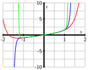

What is the connection between power series and Taylor series?
We have noted in our work with Taylor polynomials and Taylor series that polynomial functions are the simplest possible functions in mathematics, in part because they require only addition and multiplication to evaluate. From the point of view of calculus, polynomials are especially nice: we can easily differentiate or integrate any polynomial. In light of our work in Section 8.5, we now know that several important non-polynomials have polynomial-like expansions. For example, for any real number \(x\text{,}\)
and we try to determine the values of the constants \(a_0\text{,}\)\(a_1\text{,}\)\(\ldots\text{.}\) The latter situation is explored in Preview Activity 8.6.1.
Preview Activity8.6.1.
In Chapter 7, we learned some of the many important applications of differential equations, and learned some approaches to solve or analyze them. Here, we consider an important approach that will allow us to solve a wider variety of differential equations.
Let's consider the familiar differential equation from exponential population growth given by
where \(k\) is the constant of proportionality. While we can solve this differential equation using methods we have already learned, we take a different approach now that can be applied to a much larger set of differential equations. For the rest of this activity, let's assume that \(k=1\text{.}\) We will use our knowledge of Taylor series to find a solution to the differential equation (8.6.1).
To do so, we assume that we have a solution \(y=f(x)\) and that \(f(x)\) has a Taylor series that can be written in the form
\begin{equation*}
y = f(x) = \sum_{k=0}^{\infty} a_kx^k\text{,}
\end{equation*}
where the coefficients \(a_k\) are undetermined. Our task is to find the coefficients.
Assume that we can differentiate a power series term by term. By taking the derivative of \(f(x)\) with respect to \(x\) and substituting the result into the differential equation (8.6.1), show that the equation
must be satisfied in order for \(f(x) = \sum_{k=0}^{\infty} a_kx^k\) to be a solution of the DE.
Two series are equal if and only if they have the same coefficients on like power terms. Use this fact to find a relationship between \(a_1\) and \(a_0\text{.}\)
Now write \(a_2\) in terms of \(a_1\text{.}\) Then write \(a_2\) in terms of \(a_0\text{.}\)
Write \(a_3\) in terms of \(a_2\text{.}\) Then write \(a_3\) in terms of \(a_0\text{.}\)
Write \(a_4\) in terms of \(a_3\text{.}\) Then write \(a_4\) in terms of \(a_0\text{.}\)
Observe that there is a pattern in (b)-(e). Find a general formula for \(a_k\) in terms of \(a_0\text{.}\)
Write the series expansion for \(y\) using only the unknown coefficient \(a_0\text{.}\) From this, determine what familiar functions satisfy the differential equation (8.6.1). (Hint: Compare to a familiar Taylor series.)
Subsection8.6.1Power Series
As Preview Activity 8.6.1 shows, it can be useful to treat an unknown function as if it has a Taylor series, and then determine the coefficients from other information. In other words, we define a function as an infinite series of powers of \(x\) and then determine the coefficients based on something besides a formula for the function. This method allows us to approximate solutions to many different types of differential equations, even if we cannot solve them explicitly. This is different from our work with Taylor series since we are not using an original function \(f\) to generate the coefficients of the series.
Definition8.6.1.
A power series centered at \(x = a\) is a function of the form
It turns out that 1 , on its interval of convergence, every power series is in fact the Taylor series of the function it defines, so all of the techniques we developed in the previous section can be applied to power series as well.
What are \(f(1)\) and \(f\left(\frac{3}{2}\right)\text{?}\) Find a general formula for \(f(x)\) and determine the values for which this power series converges.
provided that \(-1 \lt \frac{x}{2} \lt 1\) (which ensures that the ratio is less than 1 in absolute value). Thus, the power series that defines \(f(x)=\frac{2}{2-x}\) converges for \(-2 \lt x \lt 2\text{.}\)
As we did for Taylor series, we define the interval of convergence of a power series (8.6.2) to be the set of values of \(x\) for which the series converges. And as we did with Taylor series, we typically use the Ratio Test to find the values of \(x\) for which the power series converges absolutely, and then check the endpoints separately if the radius of convergence is finite.
Example8.6.3.
Let \(f(x) = \sum_{k=1}^{\infty} \frac{x^k}{k^2}\text{.}\) Determine the interval of convergence of this power series.
for each \(n \geq 1\text{.}\)Figure 8.6.4 shows plots of \(S_{10}(x)\) (in red), \(S_{25}(x)\) (in blue), and \(S_{50}(x)\) (in green).

Figure8.6.4.Graphs of some partial sums of the power series \(\sum_{k=1}^{\infty} \frac{x^k}{k^2}\text{.}\)
The behavior of \(S_{50}\) in particular suggests that \(f(x)\) appears to be converging to a particular curve on the interval \((-1,1)\text{,}\) while growing without bound outside of that interval. Thus, the interval of convergence might be \(-1 \lt x \lt 1\text{.}\) To verify our conjecture, we apply the Ratio Test. Now,
Therefore, the Ratio Test tells us that \(f(x)\) converges absolutely when \(| x | \lt 1\) and diverges when \(| x | \gt 1\text{.}\) Because the Ratio Test is inconclusive when \(|x| = 1\text{,}\) we need to check \(x = 1\) and \(x = -1\) individually.
This is an alternating series, and since the sequence \(\left\{ \frac{1}{n^2} \right\}\) decreases to 0, the power series converges by the Alternating Series Test. Thus, the interval of convergence of this power series is \(-1 \le x \le 1\text{.}\)
Activity8.6.2.
Determine the interval of convergence of each power series.
We know power series expansions for important functions such as \(\sin(x)\) and \(e^x\text{.}\) Often, we can use a known power series expansion to find a power series for a different, but related, function. The next activity demonstrates one way to do this.
Activity8.6.3.
Our goal in this activity is to find a power series expansion for \(f(x) = \frac{1}{1+x^2}\) centered at \(x=0\text{.}\)
While we could use the methods of Section 8.5 and differentiate \(f(x) = \frac{1}{1+x^2}\) several times to look for patterns and find the Taylor series for \(f(x)\text{,}\) we seek an alternate approach because of how complicated the derivatives of \(f(x)\) quickly become.
What is the Taylor series expansion for \(g(x) = \frac{1}{1-x}\text{?}\) What is the interval of convergence of this series?
How is \(g(-x^2)\) related to \(f(x)\text{?}\) Explain, and hence substitute \(-x^2\) for \(x\) in the power series expansion for \(g(x)\text{.}\) Given the relationship between \(g(-x^2)\) and \(f(x)\text{,}\) how is the resulting series related to \(f(x)\text{?}\)
For which values of \(x\) will this power series expansion for \(f(x)\) be valid? Why?
In a previous section we found several important Maclaurin series and their intervals of convergence. Here, we list these key functions and their corresponding expansions.
\begin{align*}
\sin(x) \amp =\sum_{k=0}^{\infty} \frac{(-1)^k x^{2k+1}}{(2k+1)!}\amp\text{for}\amp-\infty \lt x \lt \infty\\
\cos(x) \amp =\sum_{k=0}^{\infty} \frac{(-1)^k x^{2k}}{(2k)!}\amp\text{for}\amp-\infty \lt x \lt \infty\\
e^x \amp =\sum_{k=0}^{\infty} \frac{x^{k}}{k!}\amp\text{for}\amp-\infty \lt x \lt \infty\\
\frac{1}{1-x} \amp =\sum_{k=0}^{\infty} x^k\amp\text{for}\amp-1 \lt x \lt 1
\end{align*}
As we saw in Activity 8.6.3, we can use these known series to find other power series expansions for related functions such as \(\sin(x^2)\text{,}\)\(e^{5x^3}\text{,}\) and \(\cos(x^5)\text{.}\)
Activity8.6.4.
Let \(f\) be the function given by the power series expansion
to find a power series expansion for \(f'(x)\text{.}\)
Observe that \(f(x)\) and \(f'(x)\) have familiar Taylor series. What familiar functions are these? What known relationship does our work demonstrate?
What is the series expansion for \(f''(x)\text{?}\) What familiar function is \(f''(x)\text{?}\)
Our work in Activity 8.6.3 holds more generally. The corresponding theorem, which we will not prove, states that we can differentiate a power series for a function \(f\) term by term and obtain the series expansion for \(f'\text{,}\) and similarly we can integrate a series expansion for a function \(f\) term by term and obtain the series expansion for \(\int f(x) \ dx\text{.}\) For both, the radius of convergence of the resulting series is the same as the original, though it is possible that the convergence status of the various series may differ at the endpoints. The formal statement of the Power Series Differentiation and Integration Theorem follows.
Power Series Differentiation and Integration Theorem.
and that the series converges absolutely to \(f(x)\) on the interval \(-r \lt x \lt r\text{.}\) Then, the power series \(\sum_{k=1}^{\infty} kc_kx^{k-1}\) obtained by differentiating the power series for \(f(x)\) term by term converges absolutely to \(f'(x)\) on the interval \(-r \lt x \lt r\text{.}\) That is,
Similarly, the power series \(\sum_{k=0}^{\infty} c_k\frac{x^{k+1}}{k+1}\) obtained by integrating the power series for \(f(x)\) term by term converges absolutely on the interval \(-r \lt x \lt r\text{,}\) and
This theorem validates the steps we took in Activity 8.6.4. It tells us that we can differentiate and integrate term by term on the interior of the interval of convergence, but it does not tell us what happens at the endpoints of this interval. We always need to check what happens at the endpoints separately. More importantly, we can use use the approach of differentiating or integrating a series term by term to find new series.
Example8.6.5.
Find a series expansion centered at \(x = 0\) for \(\arctan(x)\text{,}\) as well as its interval of convergence.
While we could differentiate \(\arctan(x)\) repeatedly and look for patterns in the derivative values at \(x = 0\) in an attempt to find the Maclaurin series for \(\arctan(x)\) from the definition, it turns out to be far easier to use a known series in an insightful way. In Activity 8.6.3, we found that
It follows that we can integrate the series for \(\frac{1}{1+x^2}\) term by term to obtain the power series expansion for \(\arctan(x)\text{.}\) Doing so, we find that
converges both when \(x = -1\) and when \(x = 1\text{;}\) in each case, we have an alternating series with terms \(\frac{1}{2k+1}\) that decrease to \(0\text{,}\) and thus the interval of convergence for the series expansion for \(\arctan(x)\) in Equation (8.6.3) is \(-1 \le x \le 1\text{.}\)
Activity8.6.5.
Find a power series expansion for \(\ln(1+x)\) centered at \(x=0\) and determine its interval of convergence.
We can often assume a solution to a given problem can be written as a power series, then use the information in the problem to determine the coefficients in the power series. This method allows us to approximate solutions to certain problems using partial sums of the power series; that is, we can find approximate solutions that are polynomials.
The connection between power series and Taylor series is that they are essentially the same thing: on its interval of convergence a power series is the Taylor series of its sum.
Exercises8.6.4Exercises
1.Finding coefficients in a power series expansion of a rational function.
Represent the function \(\displaystyle \frac{2}{(1 - 4 x)}\) as a power series \(\displaystyle f(x) = \sum_{n=0}^\infty c_n x^n\)
\(c_0 =\)
\(c_1 =\)
\(c_2 =\)
\(c_3 =\)
\(c_4 =\)
Find the radius of convergence \(R =\) .
2.Finding coefficients in a power series expansion of a function involving \(\arctan(x)\).
The function \(f(x) = 3 x \arctan (8 x)\) is represented as a power series
Find the first few coefficients in the power series.
\(c_0 =\)
\(c_1 =\)
\(c_2 =\)
\(c_3 =\)
\(c_4 =\)
Find the radius of convergence \(R\) of the series.
\(R =\)
3.
We can use power series to approximate definite integrals to which known techniques of integration do not apply. We will illustrate this in this exercise with the definite integral \(\int_0^1 \sin(x^2) \,ds\text{.}\)
Use the Taylor series for \(\sin(x)\) to find the Taylor series for \(\sin(x^2)\text{.}\) What is the interval of convergence for the Taylor series for \(\sin(x^2)\text{?}\) Explain.
Integrate the Taylor series for \(\sin(x^2)\) term by term to obtain a power series expansion for \(\int \sin(x^2)\,dx\text{.}\)
Use the result from part (b) to explain how to evaluate \(\int_0^1 \sin(x^2) \ dx\text{.}\) Determine the number of terms you will need to approximate \(\int_0^1 \sin(x^2) \,dx\) to 3 decimal places.
4.
There is an important connection between power series and Taylor series. Suppose \(f\) is defined by a power series centered at 0 so that
Determine the first 4 derivatives of \(f\) evaluated at 0 in terms of the coefficients \(a_k\text{.}\)
Show that \(f^{(n)}(0) = n!a_n\) for each positive integer \(n\text{.}\)
Explain how the result of (b) tells us the following:
On its interval of convergence, a power series is the Taylor series of its sum.
5.
In this exercise we will begin with a strange power series and then find its sum. The Fibonacci sequence \(\{f_n\}\) is a famous sequence whose first few terms are
where each term in the sequence after the first two is the sum of the preceding two terms. That is, \(f_0 = 0\text{,}\)\(f_1 = 1\) and for \(n \geq 2\) we have
\begin{equation*}
F(x) - xF(x) - x^2F(x) = x
\end{equation*}
to find a simple form for \(F(x)\) that doesn't involve a sum.
Use a computer algebra system or some other method to calculate the first 8 derivatives of \(\frac{x}{1-x-x^2}\) evaluated at 0. Why shouldn't the results surprise you?
can be used to model an undamped vibrating spring with spring constant \(x\) (note that \(y\) is an unknown function of \(x\)). So the solution to this differential equation will tell us the behavior of a spring-mass system as the spring ages (like an automobile shock absorber). Assume that a solution \(y=f(x)\) has a Taylor series that can be written in the form
\begin{equation*}
y = \sum_{k=0}^{\infty} a_kx^k\text{,}
\end{equation*}
where the coefficients are undetermined. Our job is to find the coefficients.
Differentiate the series for \(y\) term by term to find the series for \(y'\text{.}\) Then repeat to find the series for \(y''\text{.}\)
Substitute your results from part (a) into the Airy equation and show that we can write Equation (8.6.4) in the form
At this point, it would be convenient if we could combine the series on the left in (8.6.5), but one written with terms of the form \(x^{k-2}\) and the other with terms in the form \(x^{k+1}\text{.}\) Explain why
The general differential equations of the form \(y'' \pm k^2xy = 0\) is called Airy's equation. These equations arise in many problems, such as the study of diffraction of light, diffraction of radio waves around an object, aerodynamics, and the buckling of a uniform column under its own weight.